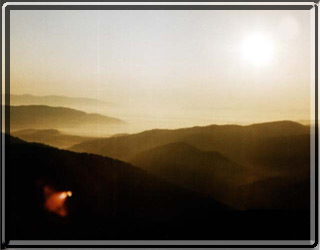

Informacje ogólne
 Bieszczady zajmują najbardziej na południowym-wschodzie wysunięty skrawek Polski. Stanowią one częsć głównego łuku karpackiego i są pierwszym członem Karpat Wschodnich, zaczynających się od doliny Sanu, Osławy, Osławicy i Laborca. W granicach Polski znajduje się jedynie skrajnie zachodnia ich częsć, czyli Bieszczady Zachodnie przechodzące ku zachodowi (za Przeł. Łupkowską) w Beskid Niski, natomiast ku wschodowi (za Przeł. Użocką) w Bieszczady Wschodnie. Po południowej stronie wododziału karpackiego, na Słowacji noszą one nazwę Bukovske Vrchy. Podział turystyczny tych gór kłóci się często z jednostkami fizycznogeograficznymi. Na szczególną uwagę zasługuje przyroda bieszczadzka.
Bieszczady zajmują najbardziej na południowym-wschodzie wysunięty skrawek Polski. Stanowią one częsć głównego łuku karpackiego i są pierwszym członem Karpat Wschodnich, zaczynających się od doliny Sanu, Osławy, Osławicy i Laborca. W granicach Polski znajduje się jedynie skrajnie zachodnia ich częsć, czyli Bieszczady Zachodnie przechodzące ku zachodowi (za Przeł. Łupkowską) w Beskid Niski, natomiast ku wschodowi (za Przeł. Użocką) w Bieszczady Wschodnie. Po południowej stronie wododziału karpackiego, na Słowacji noszą one nazwę Bukovske Vrchy. Podział turystyczny tych gór kłóci się często z jednostkami fizycznogeograficznymi. Na szczególną uwagę zasługuje przyroda bieszczadzka.
Klimat Bieszczadów, jest dość zróżnicowany i ściśle wiąże się z rzeźbą terenu i wysokością n.p.m. Wyraźny jest tu wpływ kontyntntalnych mas powietrza napływających znad Europy Wschodniej i niosących niskie temperatury w zimie i wysokie latem. Miesza się ono z suchym powietrzem znad Nizin Węgierskich. Średnia temp. roczna wynosi 5 C, w lecie osiąga ona 16 C a w zimie spada do -5 C. Opady roczne od 800 mm w rejonie Przedgórza Bieszczadzkiego osiągają swe maksimum w rejonie pasm okalających Cisną i wynoszą tam 1150 mm. Największa ilość opadów przypada na lipiec (140-150 mm). Stosunkowo suche i dogodne do uprawiania turystyki są: styczeń i luty oraz przełomy maja i czerwca oraz sierpnia i września. Pokrywa śnieżna zalega w Bieszczadach przez 150-200 dni osiągając grubość w wyższych partiach nawet do 200-300 cm.
Podział turystyczny
- pasmo graniczne pomiędzy Przeł. Łupkowską a Przeł. Użocką, stanowiące wododział karpacki z kulminacjami Okrąglika(1100 m), Rabiej Skały (1199 m), Kremenarosa (1221 m), Rozsypańca (1273 m) - gdzie łączy się z pasmem połonin - oraz Połoniny Bukowskiej (Kińczyk Bukowski 1251 m)
- pasmo połonin od Smereka (1222 m) poprzez Połoniny: Wetlińską (1253 m) i Caryńską (1297 m), gniazdo Tarnicy (1346 m) do Rozsypańca (1273 m)
- pasmo Wysokiego Działu z kulminacją Wołosania (1071 m) i rozległym masywem Chryszczatej (997 m) pomiędzy dolinami Osławy, Hoczewki i Solinki
- pasmo Łopiennika
- pasmo na północ od Sanu (1069 m) i Durnej (979 m) zwane też "grzbietem baligrodzkim" rozciągające się pomiędzy dolinami Jabłonki i Solinki. pasma na północ od Sanu (wg geografów Przedgórze Bieszczadzkie) czyli Otryt (Trochaniec 939 m), Ostre (804 m), Żuków (768 m) i Jaworniki (909 m)